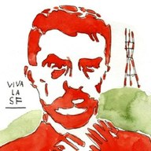

Find the exact block for a San Francisco street, and get all sorts of useful info about it, like its city ID (CNN), Muni lines and bike lanes, slope, district and neighborhood info, nearby landuse and parcels, and more.
Closest cross streets are listed first. Pick one further away to include several blocks.
Clear selections:
Start over:
“Close up” shows a layer once you zoom in to a few blocks.
Show any of these
Intersections
Narrow them down
Tap any street to add it.
Click inside one on the map to add it as a card. A click on a street still adds the street.
Extend street selections
Trim: click a street on the map to take it out (or uncheck its card).
Drop a CSV or GeoJSON to add it as a layer